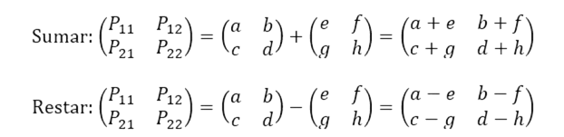
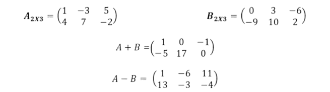
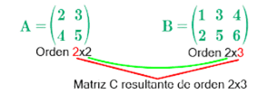
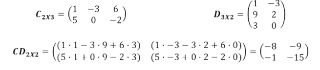
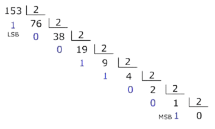
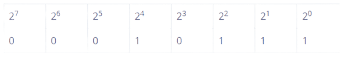

Hola, en esta página encontrarás la posibilidad de estudiar temas de distintas áreas como matemáticas, comunicación y tecnologías.
Al final de cada curso tendrás un apartado donde podrás poner a prueba tus conocimientos adquiridos durante el curso.
Las operaciones con matrices son los cálculos matemáticos que se pueden realizar entre dos o más de estas tablas de números, como la suma, la resta y la multiplicación, para combinar o transformar sus datos de forma ordenada.
Video de referenciaAl igual que puedes sumar o restar números sueltos, también puedes realizar operaciones con matrices, que son básicamente tablas rectangulares llenas de números. Estas operaciones nos permiten manipular grandes conjuntos de datos de manera muy potente.
La unión de dos o más matrices solo puede hacerse si dichas matrices tienen la misma dimensión. Cada elemento de las matrices puede sumarse con los elementos que coincidan en posición en diferentes matrices, En el caso de restar dos o más matrices se sigue el mismo procedimiento que usamos para sumar dos o más matrices.
cuando sumamos o restamos matrices nos vamos a fijar en:


Generalmente, la multiplicación de matrices cumple la propiedad no conmutativa, es decir, importa el orden de los elementos durante la multiplicación.
Para multiplicar dos matrices necesitamos que el número de columnas de la primera matriz sea igual al número de filas de la segunda matriz.


Mas contenido del tema¿Qué significan y en qué casos se utilizan las palabras: "ay", "hay" y "ahí"? "Ay" y "hay" son palabras homófonas aquellas que se pronuncian igual, pero, se escriben y significan distinto y "ahí" es una palabra parónima (aquellas que tienen cierta similitud con otras) con respecto a las dos primeras. Ahora miremos qué significan y cómo se utilizan:
Ejemplos
Ejemplos
Ejemplos
Del verbo haber.
Ejemplos
Es un adverbio demostrativo de lugar.
Ejemplos
El sistema binario o sistema diádico es un sistema de numeración fundamental en la computación e informática, en el cual la totalidad de los números pueden representarse empleando cifras compuestas por combinaciones de dos únicos dígitos.
Video de referenciaEn el caso del código binario, los dígitos utilizados son ceros (0) y unos (1). No debemos confundir el sistema con el código, ya que el primero podría operar con dígitos como a y b (dado que la lógica es la misma), mientras que el segundo opera específicamente con 1 y 0.
El código binario es fundamental para la construcción de los computadores que hoy en día conocemos, especialmente porque se adapta bien a la presencia o ausencia de voltajes eléctricos, dando así origen a un bit de información: presente o ausente, es decir, 1 o 0, respectivamente.
Método de Divisiones Sucesivas
es un proceso sencillo para convertir un número decimal (base 10) a su equivalente binario (base 2). Consiste en dividir repetidamente el número decimal entre 2 y registrar los residuos obtenidos en cada paso, hasta que el cociente sea cero.

El número decimal 153 en binario es 10011001
Método de Potencias de 2
El método de potencias de 2 es el procedimiento estándar para convertir un número binario (base 2) a su equivalente decimal (base 10). Consiste en asignar a cada dígito binario un valor ponderado basado en las potencias de 2, comenzando desde la derecha.

El número binario 10111 es igual a 23 en el sistema decimal.
Mas contenido del tema